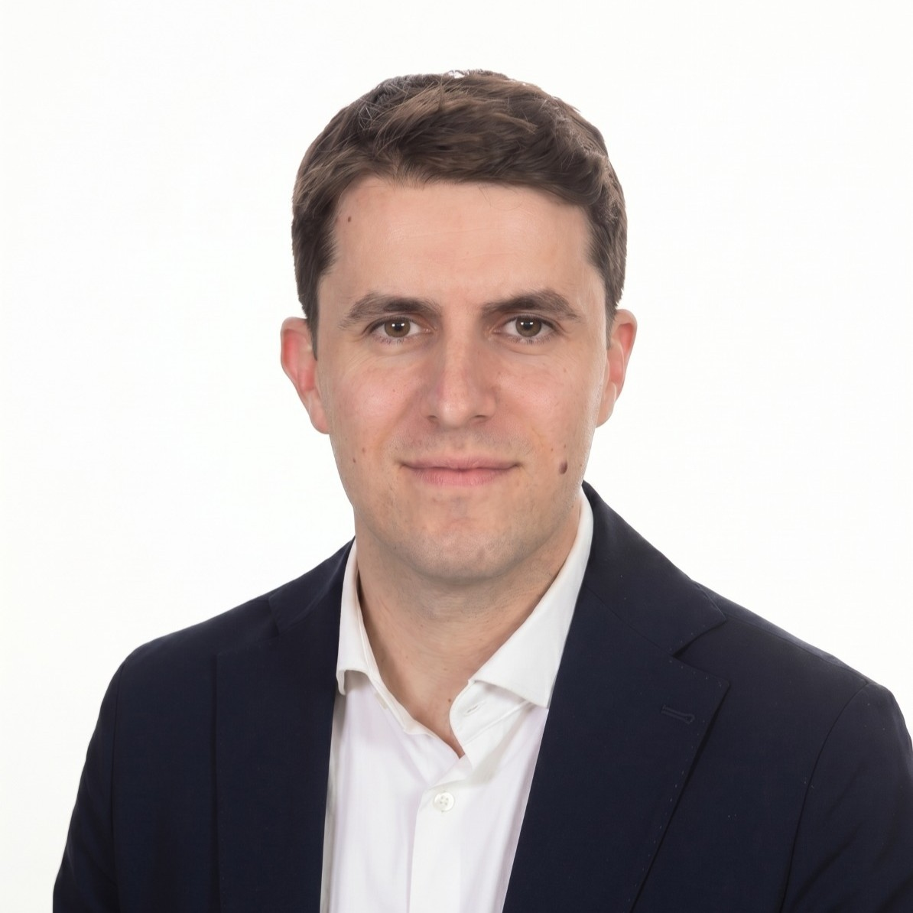
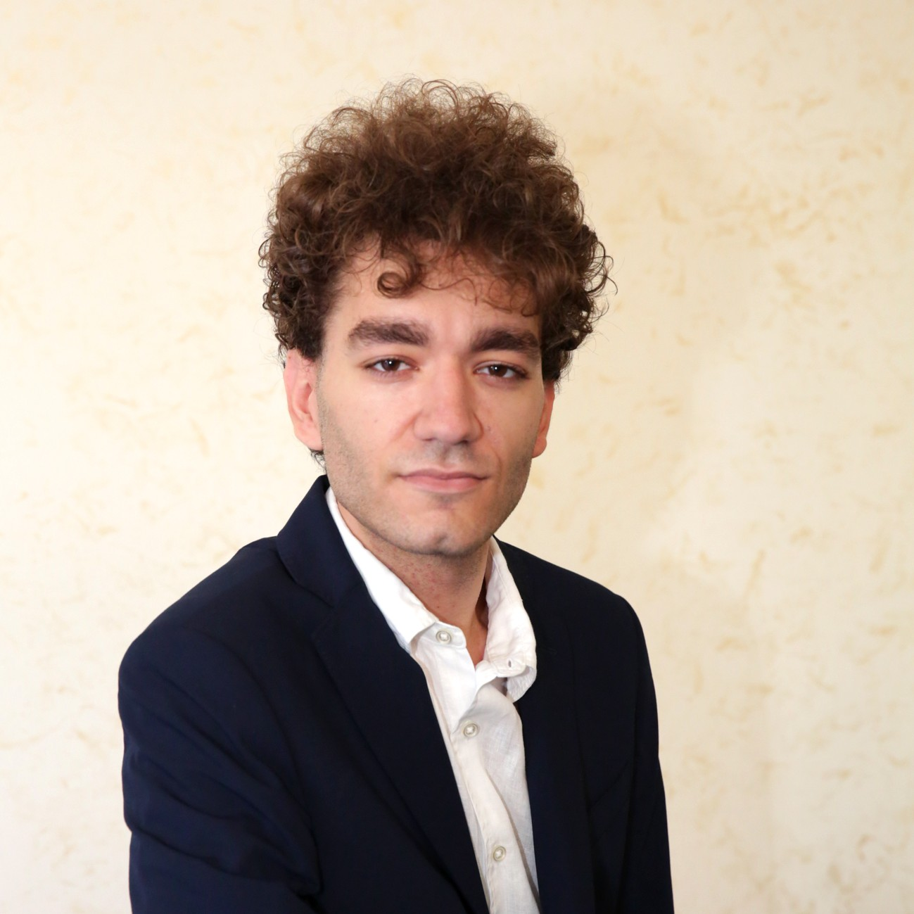
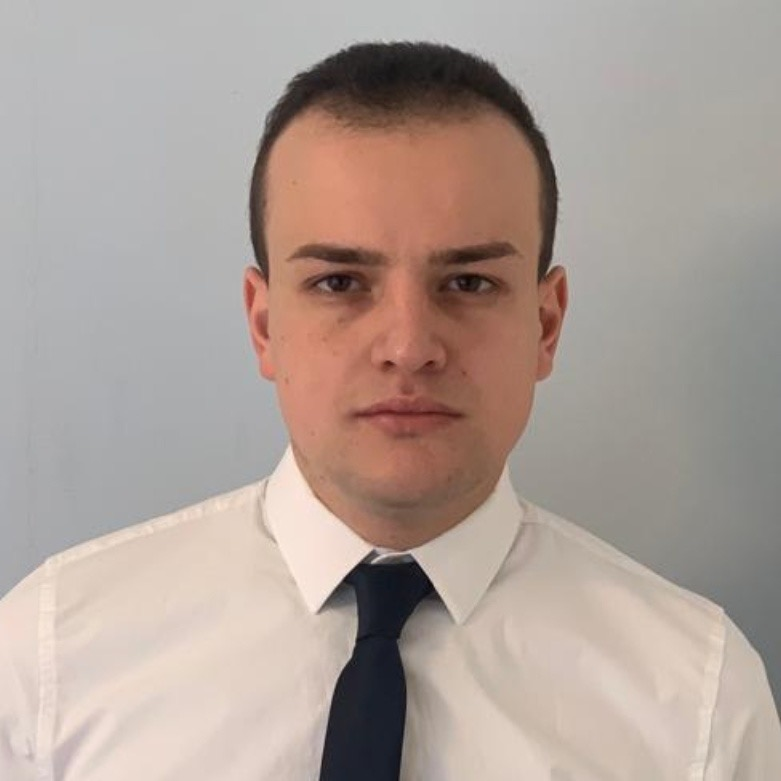
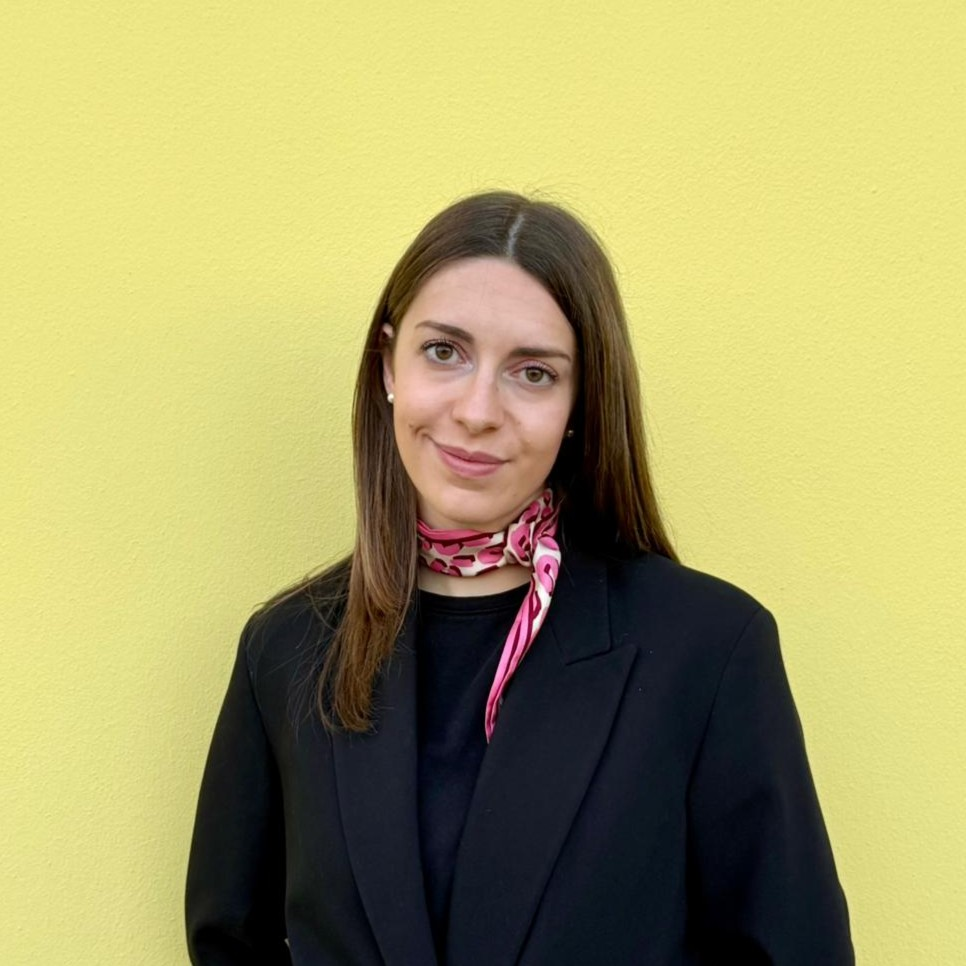
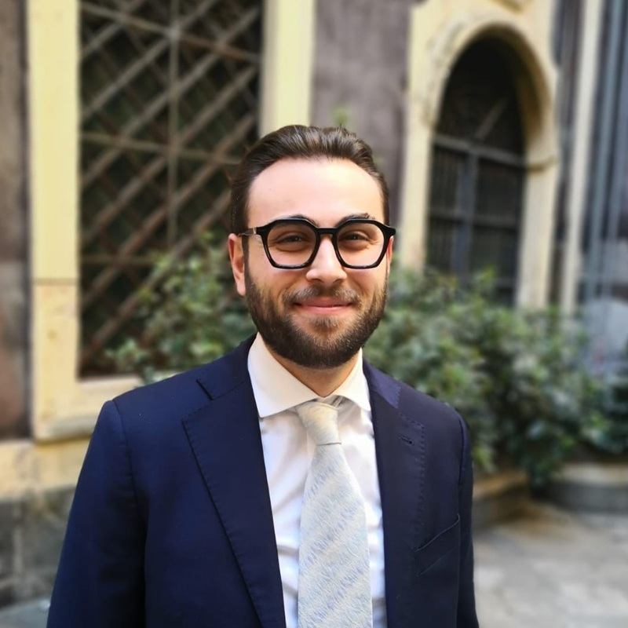
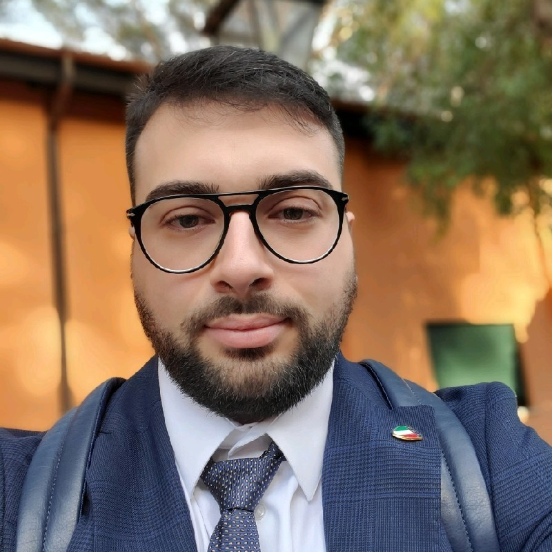
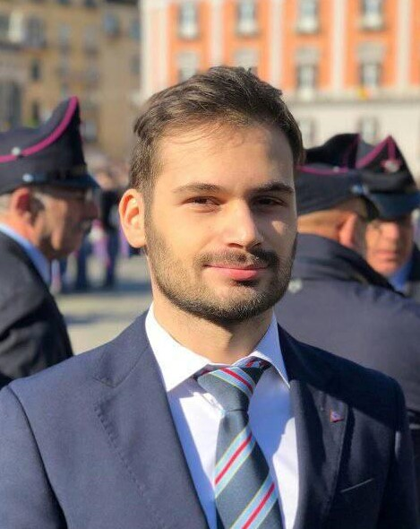

DYNAMES
DYNAMES
Direzione
La struttura direttiva e organizzativa di DYNAMES.
Fabio Boscacci
Cofondatore e Direttore Responsabile di DYNAMES, promuove l’indirizzo strategico, la supervisione editoriale e il coordinamento dei contenuti della piattaforma, con attenzione alla qualità dell’analisi e allo sviluppo della Fondazione Boscacci ETS.

Vincenzo D’Anna
Cofondatore, Consigliere editoriale e scientifico di DYNAMES, ex allievo della Scuola Militare Nunziatella. Si occupa di analisi geopolitica, comunicazione strategica, cultura della difesa e rapporto tra sicurezza, istituzioni e società civile, contribuendo all’indirizzo scientifico della piattaforma.

Alessio Postiglione
Direttore Scientifico di DYNAMES, cura il coordinamento delle attività di ricerca e il rigore analitico delle pubblicazioni, favorendo il dialogo tra metodo accademico, analisi strategica e divulgazione pubblica.

Massimo Panizzi
Direttore Editoriale di DYNAMES, contribuisce all’impostazione culturale e strategica della piattaforma, con particolare attenzione alla cultura della difesa, alla formazione e al rapporto tra sicurezza, istituzioni e cittadinanza.

Maria Cristina Treccagnoli
HR & Compliance Manager di DYNAMES, segue le relazioni interne, la gestione delle risorse e gli adempimenti organizzativi e normativi, supportando la crescita ordinata della fondazione.

Elisabetta Panico
Consulente e Ufficio Stampa di DYNAMES, cura le relazioni con i media, la comunicazione pubblica delle iniziative e la diffusione dei contenuti editoriali e istituzionali della piattaforma.

Guglielmo Brancato
Technology Advisor di DYNAMES ed ex allievo della Scuola Militare Nunziatella. Supporta la piattaforma sui temi dell’innovazione digitale, delle tecnologie emergenti e dell’evoluzione dei sistemi informativi, contribuendo all’analisi dell’impatto tecnologico sui processi strategici.

Simone Pallotta
Coordinatore eventi di DYNAMES, organizza e supervisiona tavole rotonde, seminari e iniziative pubbliche, curando logistica, relazioni operative e valorizzazione dei momenti di confronto promossi dalla piattaforma.

Serena Conticelli
Consulente grafica e fotografia di DYNAMES, contribuisce alla cura dell’identità visiva, alla produzione fotografica e alla valorizzazione estetica dei contenuti, degli eventi e dei materiali editoriali.
Junior Fellows
Giovani ricercatori, studenti e professionisti che contribuiscono allo sviluppo delle attività di analisi e ricerca.

Nicola Barbesino
Analista e ricercatore sui temi della difesa e della sicurezza, approfondisce l’evoluzione degli scenari strategici, il rapporto tra Forze Armate, società e innovazione, e le trasformazioni della sicurezza nazionale. Contribuisce alle attività di ricerca di DYNAMES con attenzione a deterrenza, resilienza e cultura della difesa.

Andrea Giacomazza
Profilo giuridico orientato ai temi della sicurezza internazionale, approfondisce deterrenza cibernetica, diritto internazionale umanitario, cyber warfare, militarized AI e resilienza cibernetica. Il suo contributo si concentra sul rapporto tra innovazione tecnologica, cornici normative e legittimità dell’azione pubblica e militare.

Francesco Cirigliano
Laureato magistrale in Relazioni Internazionali, si occupa di intelligence, tecnologie emergenti, sicurezza globale e dominio cognitivo. I suoi interessi riguardano l’impatto dell’informazione, delle percezioni e degli strumenti digitali sui processi decisionali, sulla competizione strategica e sulla resilienza democratica.

Ivan De Vita
Profilo interdisciplinare sui sistemi digitali e sulla sicurezza contemporanea, approfondisce rischio, cybercrime, minacce ibride e tecnologie emergenti. Contribuisce all’analisi di DYNAMES sul rapporto tra complessità tecnologica, vulnerabilità sistemiche, sicurezza delle organizzazioni e governance dei sistemi digitali.

Giulia Caracuta
Laureanda magistrale in Relazioni Internazionali all’Università di Bologna, ha maturato esperienze in azione umanitaria, gestione dei conflitti e sicurezza euro-atlantica. Approfondisce dossier europei di difesa e spazio, con attenzione al rapporto tra economia, industria, politica estera e autonomia strategica.
Francesco Perrone
Opera a Milano nel Terzo settore e nelle organizzazioni educative, occupandosi di fundraising, partnership, co-progettazione, co-amministrazione e sviluppo organizzativo. Laureato in Giurisprudenza e formato in Terzo Settore e Impresa Sociale, trasforma l’esperienza di volontariato in una professione orientata al servizio della società.

Francesco Bianchi
Laureato in Chimica e Tecnologie Farmaceutiche, approfondisce regolazione farmaceutica, governance sanitaria e accesso all’innovazione terapeutica. I suoi interessi riguardano politiche sanitarie, market access, sostenibilità dei sistemi di welfare e ruolo strategico della sanità negli equilibri economici, sociali e geopolitici.

Antonino Brigandì
Laureato magistrale in Relazioni internazionali e sicurezza globale presso La Sapienza, ha conseguito un master in Public Affairs e Lobbying alla Luiss Business School. Consulente di relazioni istituzionali, lavora con clienti nei settori difesa, cybersicurezza ed energia e scrive di geopolitica e politica italiana.

Luca Oriani
Laureato in Scienze Statistiche, ha una formazione in modellazione statistica, apprendimento automatico e sicurezza delle informazioni. Ha maturato competenze applicate nella compliance antiriciclaggio e ha sviluppato una tesi magistrale sull’incontro tra deep learning e crittografia neurale.
Matteo Bonetti Pancher
Studente di Giurisprudenza tra Trento e Washington University in St. Louis, dove frequenta un LL.M. in Negotiation and Dispute Resolution & International Law. Il suo percorso intreccia diritto internazionale, politica estera e public affairs, con interesse per la foreign policy statunitense e gli equilibri globali.

Giorgia Zanotel
Laureanda magistrale in Studi Europei a Udine, già dottoressa in Lingue, Civiltà e Scienze del Linguaggio a Ca’ Foscari, sviluppa un profilo interdisciplinare tra relazioni internazionali, diritto europeo, scienze politiche e cooperazione. Approfondisce l’allargamento UE ai Balcani occidentali, pacificazione, società, identità culturali e dinamiche linguistiche.

Aniello Inverso
Intelligence analyst con formazione in investigazione, criminalità e sicurezza internazionale. Si occupa di analisi strategica su minacce ibride, rischio cibernetico, criminalità organizzata transnazionale e scenari multi-dominio. I suoi interessi riguardano protezione delle infrastrutture critiche, resilienza sistemica e modelli di warning e decision support.

Luigi Piccione
Analista geopolitico presso il Centro Studi Amistades di Roma, opera nelle aree MENA e Difesa e Sicurezza. Si occupa di monitoraggio strategico del Medio Oriente e Nord Africa, con focus su Iran, difesa, sicurezza internazionale e analisi OSINT degli scenari geopolitici contemporanei.

Luciano Pastore
Laureato magistrale in Scienze del Governo presso l'Università degli Studi di Torino, ha conseguito un master in Corporate communication, Lobbying & Public Affairs alla 24Ore Business School. Ha maturato esperienza nell’ambito dei Public Affairs, lavorando come consulente per diversi clienti in una società di lobbying e come account in-house in azienda.

Francesco Custureri
AI Engineer con focus su intelligenza artificiale, cybersecurity, infrastrutture critiche e interesse nazionale. Si occupa di applicazioni AI strategiche in contesti enterprise, integrando competenze tecniche, trasformazione digitale e visione sui sistemi complessi. Affianca al profilo ingegneristico un percorso di approfondimento su geopolitica, intelligence economica e sovranità tecnologica.
Danilo Mattera Trimonti
Laureato magistrale in Relazioni Internazionali presso l’Università degli Studi Roma Tre. Si interessa di tematiche afferenti agli Studi Strategici e alla Storia delle Relazioni Internazionali come l’evoluzione della difesa euro-atlantica, l’innovazione militare e la diffusione degli armamenti nel sistema internazionale. Nel corso degli anni ha avuto modo di collaborare con istituzioni pubbliche e centri di ricerca privati, scrivendo contributi per diverse testate tra cui AffarInternazionali, Aspenia, Formiche.net/AirPress, Rivista Marittima e Geopolitica.

Guido Dello Ioio
Laureato magistrale in Giurisprudenza presso l’Università degli Studi di Napoli Federico II e praticante avvocato presso l’Avvocatura Distrettuale dello Stato di Napoli, in precedenza diplomato presso la Scuola Militare “Nunziatella”. Si occupa di Diritto Europeo della concorrenza (c.d. Antitrust), regolazione dei mercati e governance economica, con particolare attenzione al rapporto tra intervento pubblico, concorrenza e sicurezza economica.
Ha svolto attività di ricerca sui mercati digitali e sul Digital Markets Act presso l’Università di Vienna e ha approfondito temi di diritto europeo ed economia della regolazione attraverso esperienze accademiche e formative internazionali. I suoi interessi di ricerca riguardano la sicurezza economica europea, il Foreign SubsidiesRegulation, il Golden Power e il ruolo degli strumenti giuridici nella tutela dei settori strategici e dell’autonomia industriale europea.
Francesco Mitrangolo
Analista con formazione in sicurezza internazionale, intelligence e difesa, approfondisce tecnologie emergenti, sistemi complessi e innovazione militare. I suoi interessi riguardano C4ISR, UAV, dominio elettromagnetico, cyber warfare, intelligenza artificiale e impatto delle tecnologie disruptive sugli ecosistemi strategici contemporanei.
Subject Matter Expert & Contributors
Esperti, autori e professionisti che collaborano con DYNAMES su specifici ambiti tematici e progettuali.
Domenico Letizia
Giornalista pubblicista, saggista e analista, collabora con testate nazionali occupandosi di geopolitica, diritti umani, Blue Economy e sostenibilità. Approfondisce Artico, Canada, sicurezza energetica e sviluppo dei mercati globali, unendo attività editoriale, comunicazione e partecipazione pubblica.

Laura Laportella
Digital strategist, consulente di comunicazione pubblica e analista della comunicazione digitale. Collabora con istituzioni, università, Terzo Settore e organizzazioni politiche, occupandosi di strategie digitali, social media, campagne, formazione e narrazioni online nei processi pubblici e geopolitici.
Francesco Scordo
Giurista specializzato in A.I. e Cybersecurity, ex allievo della Scuola Militare Nunziatella. Studia e investe in Bitcoin dal 2012, con competenze legali, informatiche ed economiche su criptovalute, blockchain, ICT, modelli di A.I. e sistemi quantistici. Socio CLUSIT, è docente, pubblicista e consulente per istituzioni italiane ed europee.
Piervito Tria
Subject matter expert in tecnologia, sistemi complessi, sicurezza e infrastrutture strategiche. Lavora su cybersecurity, governance del rischio e resilienza organizzativa in contesti internazionali. Ex allievo della Scuola Militare Nunziatella e laureato LUISS, ha esperienze tra Germania, Australia, Messico e Danimarca e collabora con Aliseo su cyber power e trasformazioni geopolitiche.